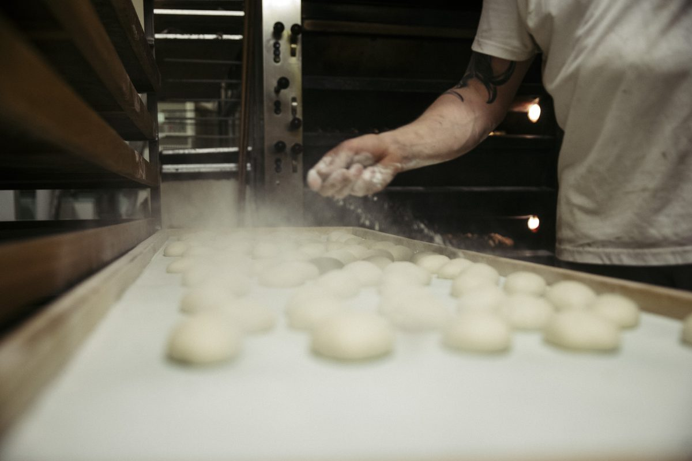

Sortiment
Was heute in der Auslage liegt
Alles täglich von Hand. Keine Tiefkühlteiglinge, keine Backvormischungen.

Brote
über Nacht gereift, morgens im Regal
RoggenmischbrotPublikumsliebling der Berliner Brotwahl 2026Publikumsliebling 2026
VollkornbrotQuellstück, rund 16 Stunden
Weizen- und Mischbrotetäglich wechselnd
Spezialbrotenach Saison

Brötchen
auf Steinplatten gebacken, von Hand geschlungen
Ost-SchrippeDDR-Rezept, kompakt, krümelt kaum
Berliner Splitterbrötchensamstags oft vor Mittag weg
KörnersortenMohn, Sesam, Kürbis, Sonnenblume
CroissantsButter oder Würstchen
Käse- und Dinkelsprossenbrötchenfrisch von der Steinplatte
Belegte Brötchen und BaguettesMett, Ei, Käse, Salami, Schinken

Kuchen & Feingebäck
aus der eigenen Konditorei
Pfannkuchenvon Hand gespritzt, in siedendem Fett gebacken
Kameruner, SpritzkuchenFettgebäck wie vor 50 Jahren
Mohnzopfder Geheimtipp der Stammkunden
Streuselkuchen, Obstplunder, Apfelzimtschnecketäglich frisch vom Blech
Bienenstich, Donauwellenach Originalrezept
Zur Saison

Als Nächstes
Frühjahr · Ostern
Osterzopf
Hefezopf, von Hand geflochten, wie er zu Ostern gehört.

Als Nächstes
Advent · Weihnachten
Christstollen
Schwer und buttrig, dick mit Puderzucker. Ab der Adventszeit frisch aus dem Steinofen.

Als Nächstes
Jahreswechsel · Silvester
Berliner Pfannkuchen
Von Hand gespritzt, in siedendem Fett gebacken.
Torten auf Bestellung
Torten bestellen Sie telefonisch
030 44 57 576Di bis Fr 6:00 bis 18:30, Sa bis 13:30.